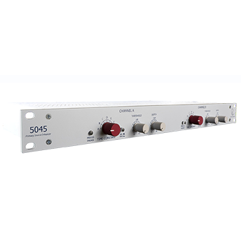

Dynamics
5045
Primary Source Enhancer
The 5045 Primary Source Enhancer is exceptionally useful at reducing feedback without negatively impacting the sonic integrity of the source signal, effectively increasing the level a microphone can be raised before feedback occurs in a live sound environment by up to 20dB. With controls that are very simply laid out and generally require minimal adjustment, the 5045 is an invaluable tool for churches, stadiums, performance halls, or any venue where feedback is problematic.